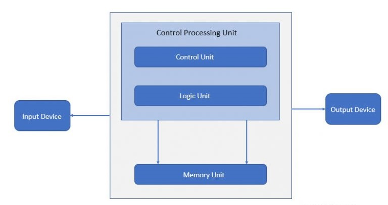
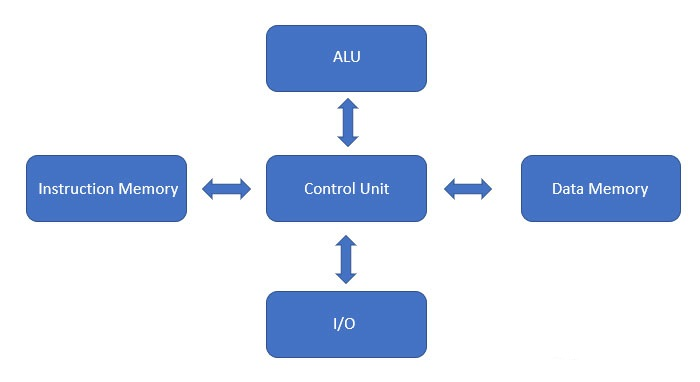

Introduction to Types of Computer Architecture
Computer architecture consists of rules and methods or procedures which describe the implementation, functionality of the computer systems. Architecture is built as per the user’s needs by taking care of the economic and financial constraints. Earlier architecture is designed on paper built with hardware form.
After it is built-in transistor-transistor logic the architecture is built, tested and formed in the hardware form. We can define computer architecture based on its performance, efficiency, reliability, and cost of the computer system. It deals with software and hardware technology standards. The computer system has the processor, memory, I/O devices and communication channels that connect to it.
Types of Computer Achitecture
Given below are the types of Computer Architecture:1. Von-Neumann Architecture:
This architecture is proposed by john von-neumann. Now a day’s computer we are using are based on von-neumann architecture. It is based on some concepts.
The memory we have a single read/write memory available for read and write instructions and data. When we talk about memory, it is nothing but the single location which is used for reading and writing instructions for the data and instructions are also present in it. Data and instructions are stored in a single read/write memory within the computer system.
Each memory has multiple locations and each location has a unique address. We can address the contents of memory by its location irrespective of what type of data and instructions are present in the memory, because of which we can read or write any data and instructions. Execution always occurs in a sequential manner unless the change is required. For example, suppose we are executing an instruction from line 1 to line 10 but now we required to execute line 50 instead of line 11 then we jump to instruction 50 and execute it.
There is a bus (address bus/data bus/control bus) used for the instruction and data code execution. Input device takes data or instruction and the Central processing unit (CPU) performs one operation at a time, either fetching data or instruction in/out of the memory. Once the operation is done it is sent to the output device. Control and logic units for processing operations are within the central processing unit.
2. Harvard Architecture:Harvard architecture is used when data and code is present in different memory blocks. A separate memory block is needed for data and instruction. Data can be accessed by one memory location and instruction can be accessed by a different location. It has data storage entirely contained within the central processing unit (CPU). A single set of clock cycles is required. The pipeline is possible. It is complex to design. CPU can read and write instructions and process data access. Harvard architecture has different access codes and data address spaces that is, the instruction address zero is not the same as data address zero. Instruction address zero identifies 24-byte value and data address zero identifies 8-byte value which is not the part of the 24-byte value.
Modified harvard architecture is like a harvard architecture machine and it has a common address space for the separate data and instruction cache. It has digital signal processors that will execute small or highly audio or video algorithms and it is reproducible. Microcontrollers have a small number of programs and data memory and it speeds up the processing by executing parallel instructions and data access.
We can observe in the below image, there are separate data and instruction memory that is a bus available to perform operations. It is contained entirely within the Central processing unit. It can perform Input/output operation simultaneously and it has a separate arithmetic and logic unit.
 3. Instruction Set ArchitectureTo make up the architecture, instruction set architecture is needed because it has a set of instructions that the processor understands. It has two instruction set one is RISC (reduced instruction set computer) and the second is CISC (complex instruction set computer).
Reduced instruction set computer architecture was realized in the 90’s by IBM. Instruction has multiple address modes, but programs do not use all of them that is the reason multiple address modes were reduced. This helps the compiler to easily write the instructions, performed is increased.
Complex instruction set architecture is the root of compilers because earlier compilers were not there to write programs, to ease programming instructions are added. The best performance is obtained by using simple instruction from ISA.
4. MicroarchitectureMicroarchitecture is known as computer organizations and it is the way when instruction set architecture is a built-in processor. Instruction set architecture is implemented with various microarchitecture and it varies because of changing technology.
Microarchitecture performs in a certain way. It reads the instruction and decodes it, will find parallel data to process the instruction and then will process the instruction and output will be generated.
It is used in microprocessors, microcontrollers. Some architectures overlap multiple instructions while executing but this does not happen in microarchitecture. Execution units like arithmetic logic units, floating-point units, load units, etc are needed and it performs the operation of the processor. There are microarchitecture decisions within the system such as size, latency, and connectivity of the memories.
5. System DesignThe name defines itself, the design will satisfy user requirements such as architecture, module, interfaces and data for a system and it is connected to product development. It is the process of taking marketing information and creating product design to be manufacture. Modular systems are made by standardizing hardware and software.
For more details you can visit this link: Wikipedia